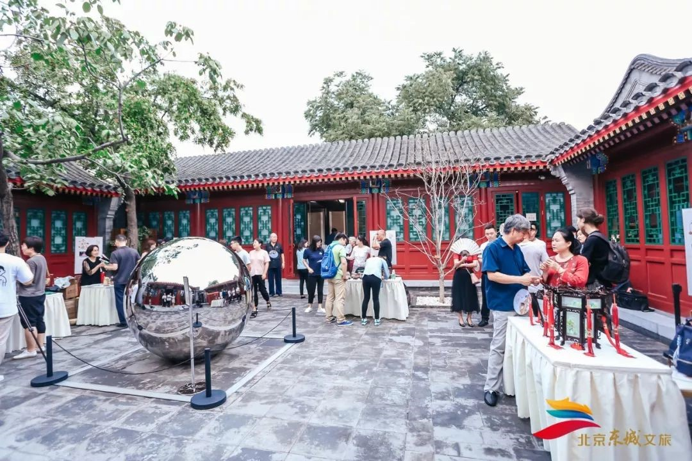
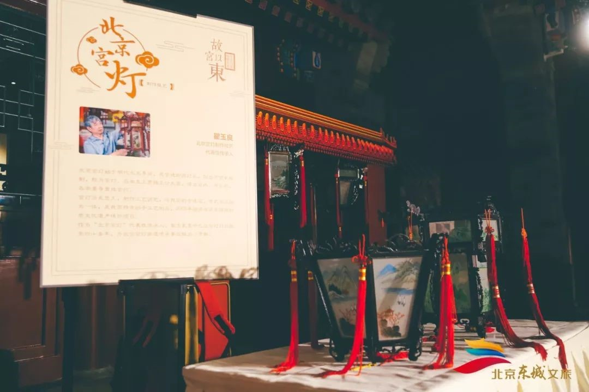
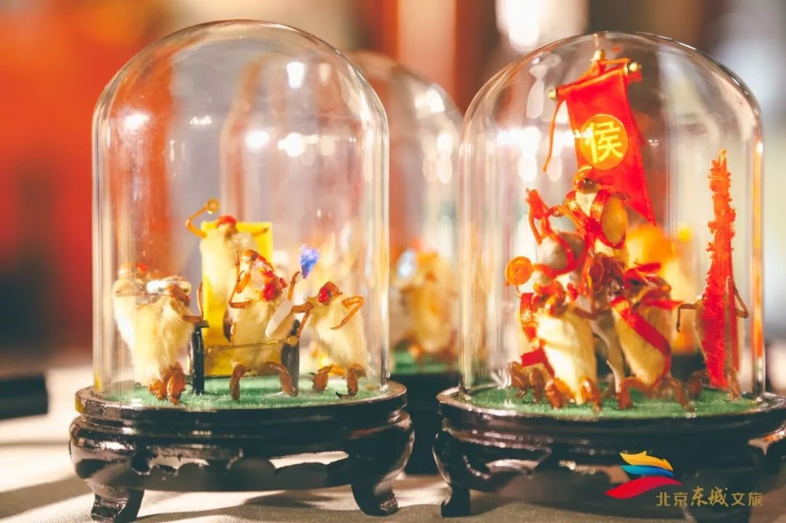
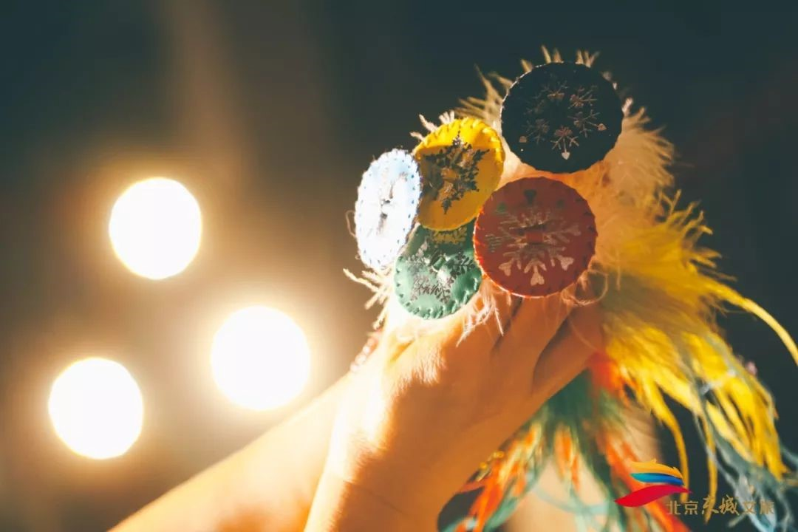
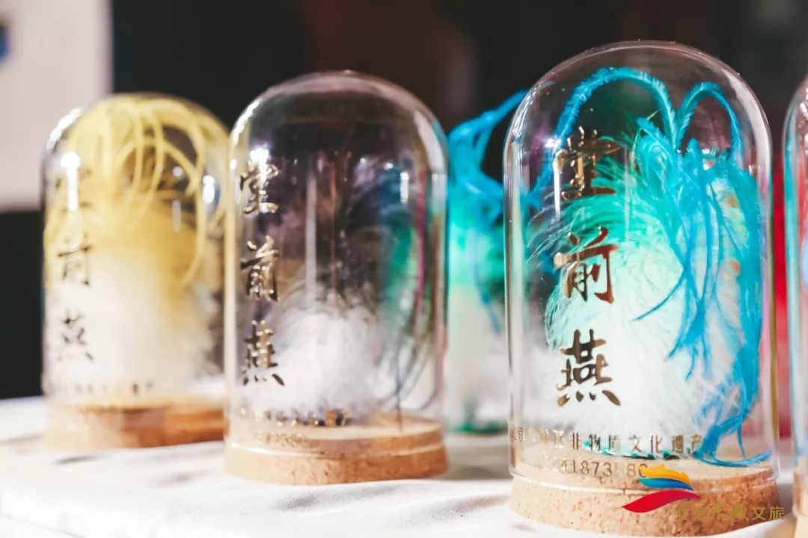
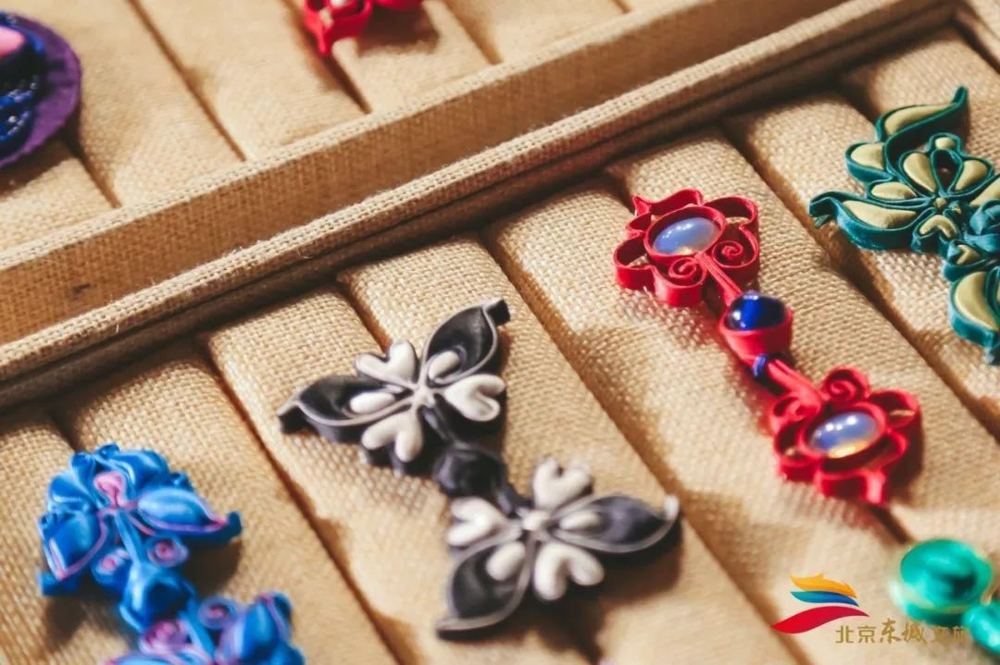
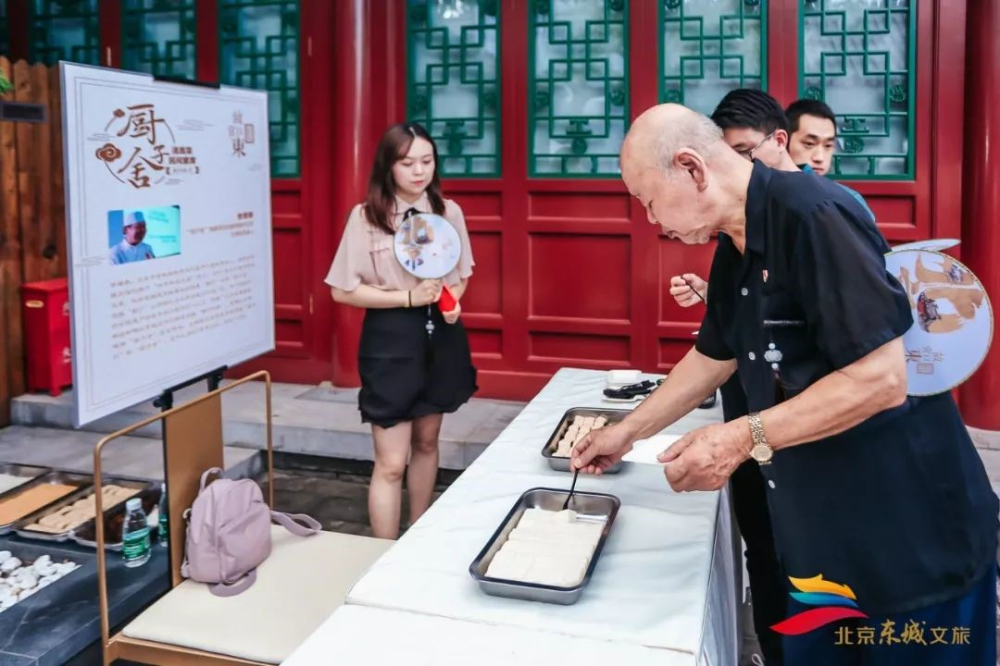
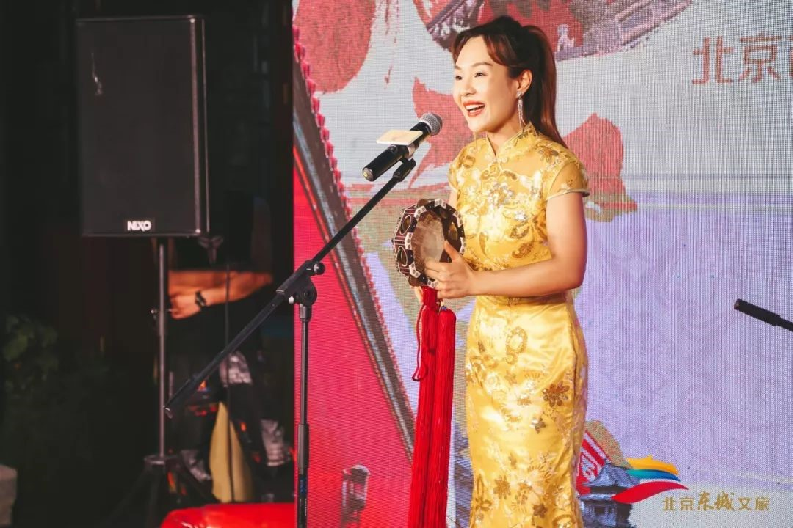

够京味儿！4条线路让你体验更有活力的文化东城！
来源：北京东城
近日，东城区文化和旅游局与凯撒旅游在东四胡同博物馆举行发布会，正式签署旅游资源推介合作备忘录。首批4条文化行旅线路同时亮相。
文化行旅线路
艺术京脉——感知综合美学的文化浸染
途经：嘉德艺术中心—璞暄酒店—中国美术馆
京味儿食足——“非遗”美食匠人带您品味古都
途经：天兴居—都一处—便宜坊
京腔京韵—在中国第一家戏剧博物馆，京味儿“文化主理人”有话说
途经：人艺戏剧博物馆—智化寺—天乐园大戏楼
情满四合院——隐于胡同深处的学堂，人艺、史家、东四寻礼记
途经：人艺戏剧博物馆—史家胡同博物馆—东四胡同博物馆
特邀“文化主理人”代言京味儿文化
首批“故宫以东”文化行旅线路包括“艺术京脉”“京味儿食足”“京腔京韵”“情满四合院”等主题，每一条文化行旅线路中都设置了“文化主理人”角色，由当代艺术家、非遗代表性传承人、文化专家学者、深谙京味儿文化的北京“土著”等组成，他们将发挥各自专长，帮助游客在旅行中收获深层次的精神文化体验。
签约仪式当天，多位“文化主理人”来到现场，向观众展示了旗袍古法、堂前燕子毽、北京毛猴、厨子舍、北京宫灯等非遗文化，并获得主办方颁发的聘书。
   旗袍古法设计师、非遗公益讲师栗紫表示，自古以来许多家庭都有亲自动手为孩子做衣服的习惯，而服饰不仅具有实用功能，还代表着“知礼仪、别尊卑、正名分”等一系列传统文化。将传统服饰课程融入文化行旅路线，既能让传统非遗文化“活”起来，还能带领更多人回归传统、重新感受家的文化。
根据双方签署的合作备忘录，凯撒旅游将作为“故宫以东”项目海外推广总代理，研发并推广适合海外市场需求的“故宫以东”产品，以提升该项目在全球旅游市场的认知度。

凯撒旅游副总裁郭静表示，此次发布的4条文化行旅线路既有老北京的传统文化，同时融入了现代化、国际化的艺术元素。凯撒旅游将依托线上及线下北京市100余家门店、国内其他省市300余家门店、全球8家分公司等同步推广，将文化行旅线路及“故宫以东”品牌传播给更多热爱北京文化、艺术的中外游客，实现旅游产品向精神文化领域的延伸。
文旅融合助“故宫以东”品牌再升级
与凯撒旅游签署旅游资源推介合作备忘录，也是东城区文化和旅游局继与打造精品生活方式的平台寺库推出48小时时间设计师带你发现“故宫以东”、与中青旅研学事业部共同研发“故宫以东”文化主题研学旅行课程、与Airbnb爱彼迎合作打造“体验匠心”非物质文化遗产旅游示范项目、与区内13家五星级酒店及品牌餐饮联手推出“故宫以东”下午茶之后，“故宫以东”区域文旅品牌产品内容的又一次丰富、品牌体系的又一次升级。
东城区文化和旅游局副局长马庆军表示，“故宫以东”作为东城区全新的区域文化旅游品牌，在内容上更加突出文化内涵、在产品上更加细分主题、在渠道上更加精准定位人群，是东城讲好故事、谋好项目、做好产品的“超级链接”。东城区致力于打造良好的营商环境、促进区域消费升级，支持像凯撒旅游这样的优秀驻区企业弘扬优秀文化，也通过他们专业的产品研发和市场推广能力，使文化和旅游资源变成可看、可听、可走、可触摸、可体验、可回味的生活方式，让文化更加生动、充满活力，让城市更有魅力。
据悉，本次签约发布会后，还将有不同主题的产品陆续推出。